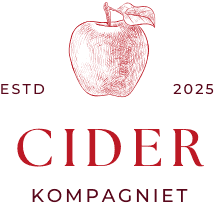

Round QR
Paste a link, shape the code, save it as PNG, JPG or SVG.
I built Round QR together with AI because I needed a good QR code tool myself, and now I'm sharing it with everyone. There will never be subscriptions, logins or ads. The only thing is a few happy sponsors at the bottom of the page.
Kind regards, Kasper Bergstrøm
Circle gives a decorated round code, Square is the classic QR code.
The small cells the code itself is built from.
The three big squares the phone uses to find the code.
Decorative dots with no data that make the code look round.
A thin decorative ring around the circle.
Circle gives transparent corners, Square gives a filled background.
The code blends from Code to End colour, so keep both colours dark.
The logo covers the middle, so error correction switches to H.
How much of the code can be damaged before it stops scanning.
Higher survives dirt, damage and logos but makes a denser code. A logo locks it to H.
Sponsors
Round QR is free and has no ads. Thanks to the companies that support it.
- AI Workshopai-workshop.dk Hands-on AI workshops and courses for staff, managers and teachers. From the first prompt to routines that stick.
- Berg-Streamingberg-streaming.dk Video, podcasts and livestreaming of events. Clip cards, fixed packages or a workshop where you learn to produce it yourself.
-
 StemplerIndstemplerind.dk
Time tracking with NFC. A sticker by the door clocks you in and out, and the free app keeps track of your hours and balance.
StemplerIndstemplerind.dk
Time tracking with NFC. A sticker by the door clocks you in and out, and the free app keeps track of your hours and balance.
- Forlaget Uldahlforlagetuldahl.dk A new Danish publisher of books about nature and the good experiences it offers, for children and adults.
-

Cider Kompagnietciderkompagniet.dk Cider from England, Ireland, France, Denmark and the USA. With and without alcohol, and several are organic. - Arbejdsliv.aiarbejdsliv.ai A conference on AI at work for individuals, teams and organisations. 11 February 2027 at the Danish Architecture Centre.
- PharmaConsulting.aipharmaconsulting.ai Helps pharmaceutical companies adopt AI responsibly, with people at the centre. Consulting, coaching and workshops.
Download Round QR
The whole program in one HTML file. Open it in your browser and make QR codes, even offline. Nothing to install.
Questions and answers
The things people ask most.
Can I use the QR codes commercially?
Yes. Use them on packaging, signs, menus, business cards, posters and anything else. You don't need to pay, ask permission or mention Round QR.
Do the QR codes expire?
No. They are static codes, so the link is stored directly in the pattern itself. There's no redirect service or account in between that can shut down. The code works as long as the page it points to exists.
Can a round QR code be scanned?
Yes. The round shape is decoration around a completely normal QR code that every phone can read. Round QR scans the code itself and shows "Scans correctly" when it is fine. Still, test it with your own phone before you send anything to print.
What does it cost?
Nothing. There will never be subscriptions, logins or ads. The site is paid for by the sponsors above.
Do you store my links or images?
No. Everything happens in your own browser and nothing is sent to a server. No cookies and no tracking.
Is Round QR open?
Yes. All the source code is public on GitHub, and you can download the whole program as one HTML file and use it offline. github.com/rapsak5/roundqr